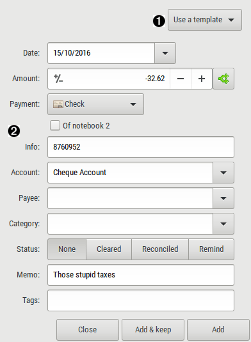

Using transaction dialog

The 'Add' button enable to add an transaction and keep the transaction dialog open to add more transactions.
 Transaction details
Transaction details
| Date | date of the transaction (dd.mm.yy). - use shift key + arrow up/down to increase/decrease date. - the right side button popup a full calendar |
|---|---|
| Amount | amount of the transaction - the right side +/- button toggle between income/expense |
| Payment |
payment for the transaction. It will be displayed as small
icons.
See the lexicon for payment detail |
| Of notebook 2 To account |
these fields appears depending on the payment
selected: for cheque: select the 2nd cheque notebook for internal transfer: select the destination account |
| Info | additional informations such as real date or value
date, cheque numbers, other numbers related to the transaction. this field is automatically filled for cheque numbers. |
| Account | account the transaction should be attached to. |
 Transaction details
Transaction details
| Payee | payee of the transaction, see payee definition for further details. |
|---|---|
| Category | category of the transaction, see category definition for further details. |
| Memo | memo of transaction. and optionally vehicle cost data's, see vehicle cost. |
| Tags | tags of the transaction, see tag definition for further details. |
| Status |
The different status a transaction can have:
|
 Fill in with
template
Fill in with
template
Select a source template definition to fill in the transaction dialog fields.